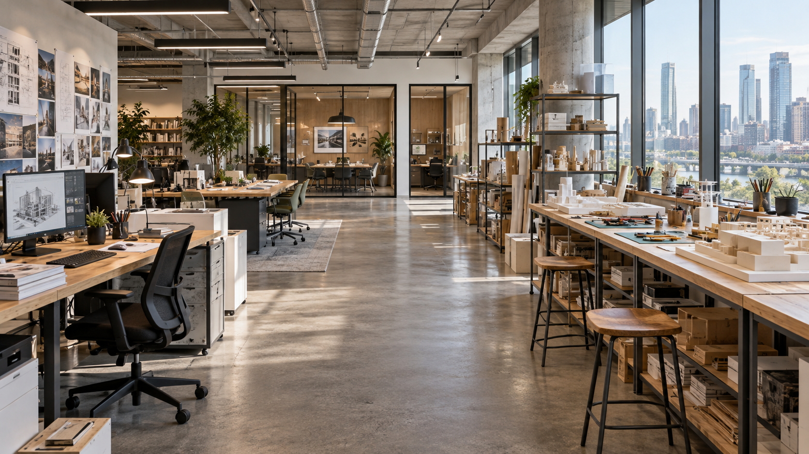
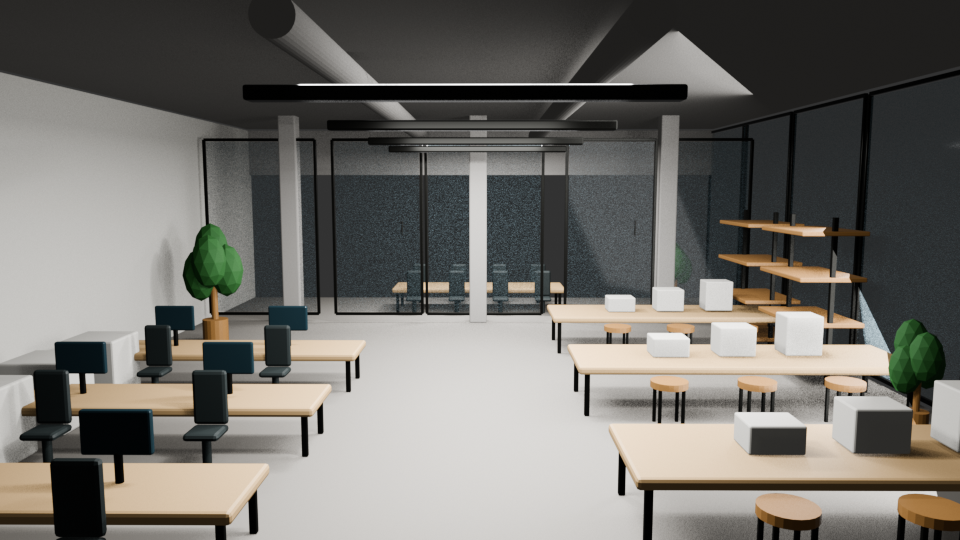
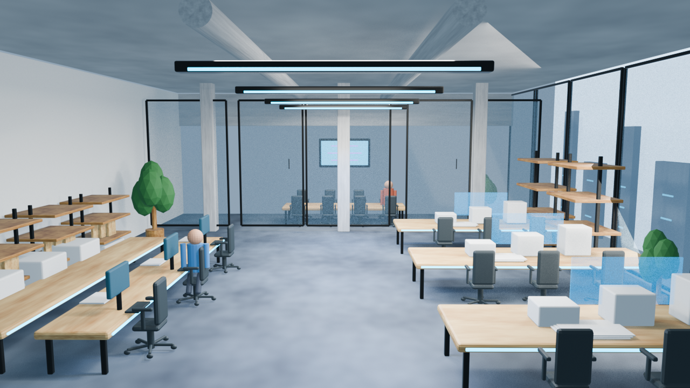

Studio Design
Process / Outcome
For this project I wanted to design an architecture studio that balances collaboration, individual work, model making, and private meeting/working spaces within one open environment. My main goal was to create a workspace that is functional while also being modern. I wanted the studio to reflect the way an architecture office might actually operate, with different spaces supporting different stages of the design process.
The layout is organized around a clear central circulation path. The main working area is located on the left, while the model making and prototype area is placed next to the floor to ceiling windows on the right. In the back, there are enclosed meeting rooms to create quieter spaces where people can have meetings, make calls, or work without the distractions of the open studio.
Natural daylight was also an important part of the design. The large windows bring light into the studio while providing a view toward the surrounding city. The final image was intended to feel like a professional contemporary architecture office rather than a conceptual or science-fiction environment.
Prompts used on Codex
generate a wide interior concept image of a design studio. show a prototype making area next to floor to ceiling windows that show the landscape of a city on the right. show working areas on the left and in the back show meeting rooms that allow a quiet space where people can go take meetings or work in a more quiet and enclosed space. keep a clear walkway between areas. The view should be at eye level with a soft daylight. avoid floating holograms and decorative texts

Prompt used
@Computer Open Blender and use my attached image as a visual reference. Create a simple, editable 3D scene using basic geometry. Start with the floor, main walls, doors, windows, and large objects. Use Blender’s Python tools when helpful. Show me the first version, then stop and wait for my feedback.

